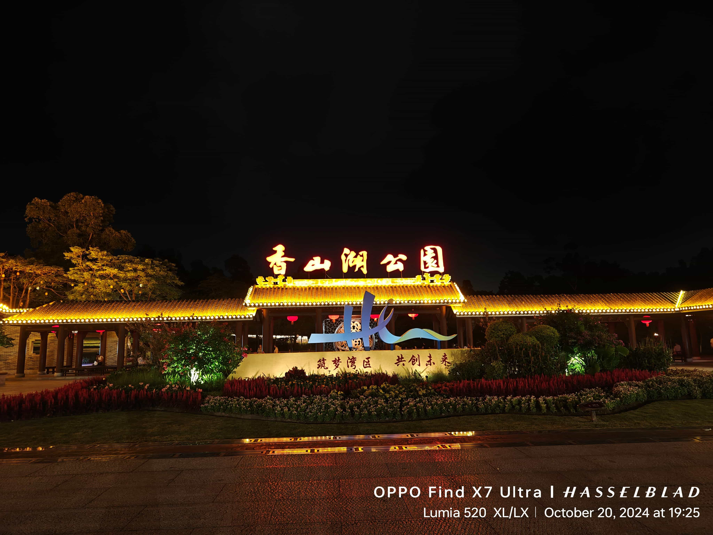
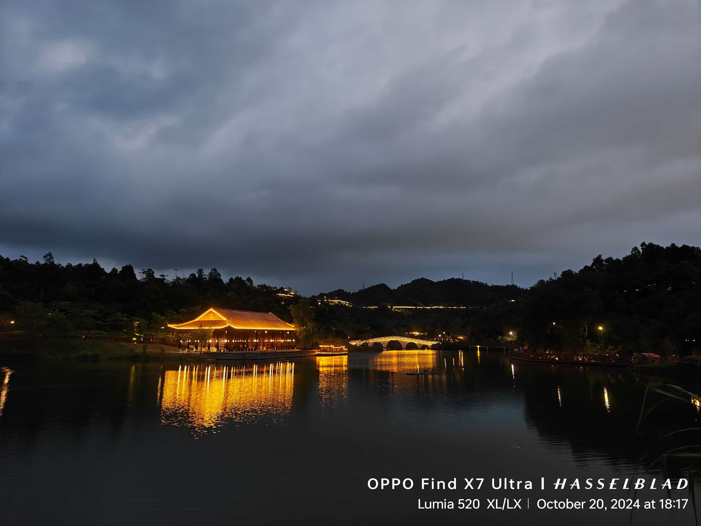
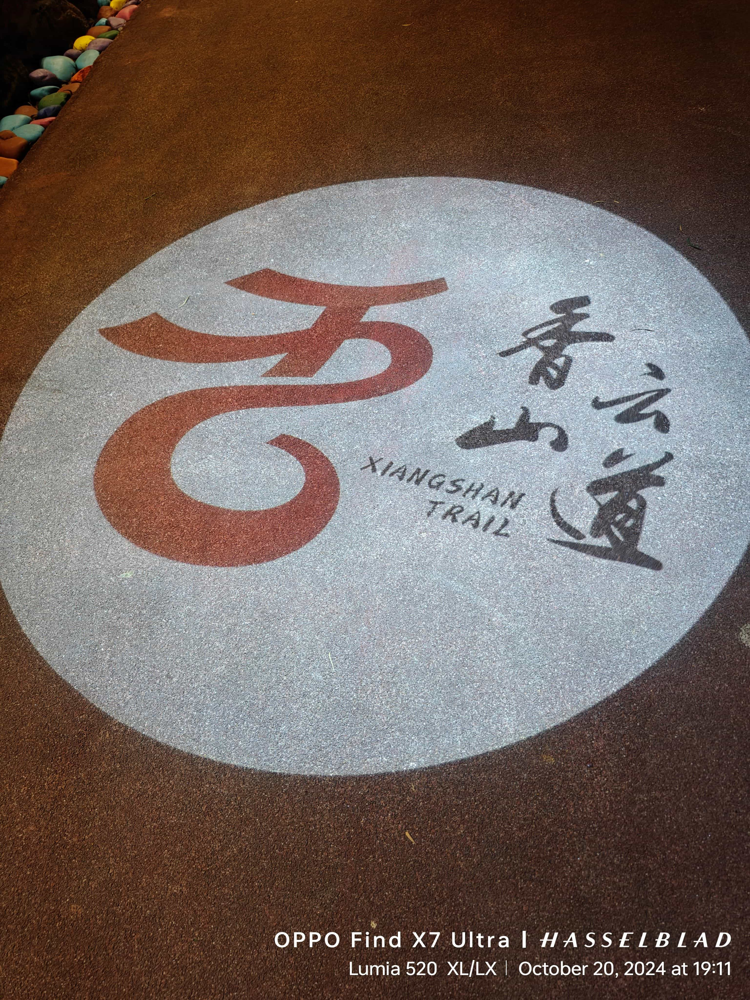
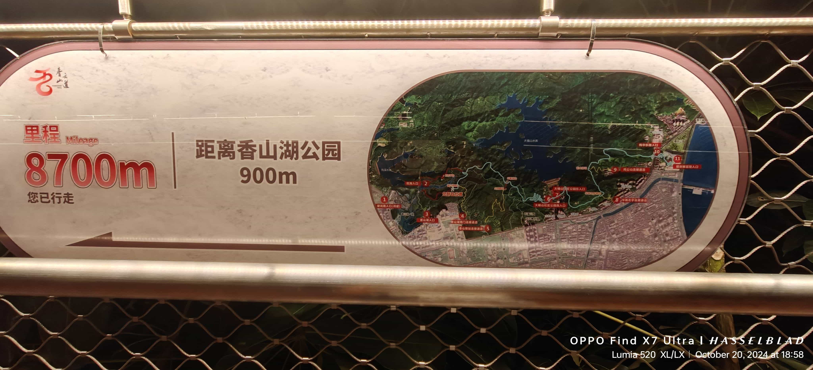
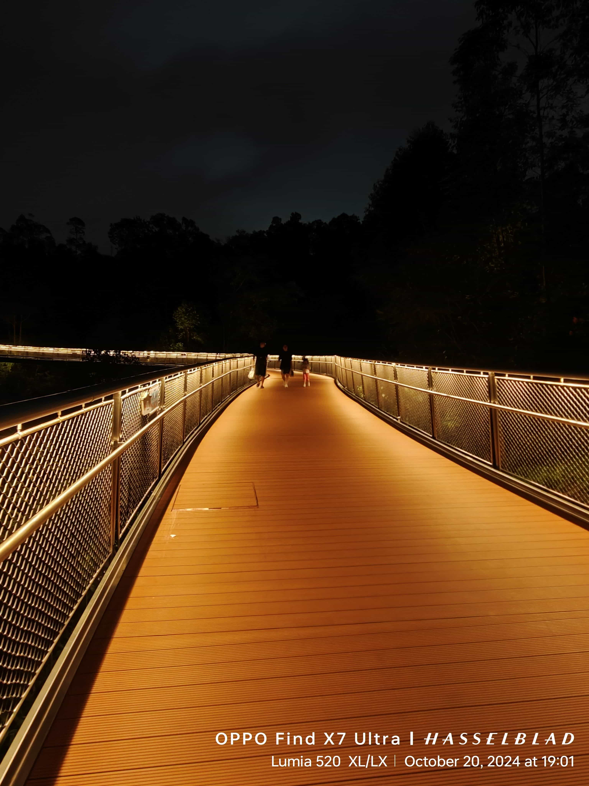
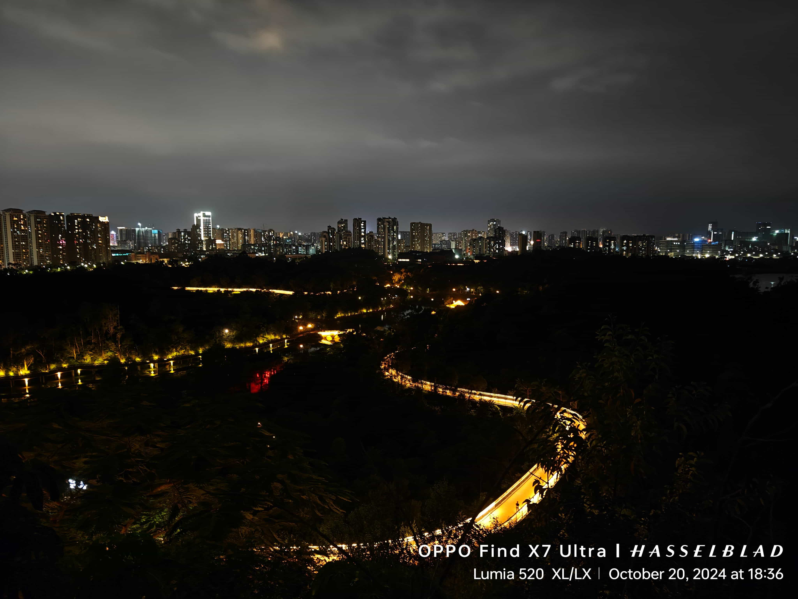
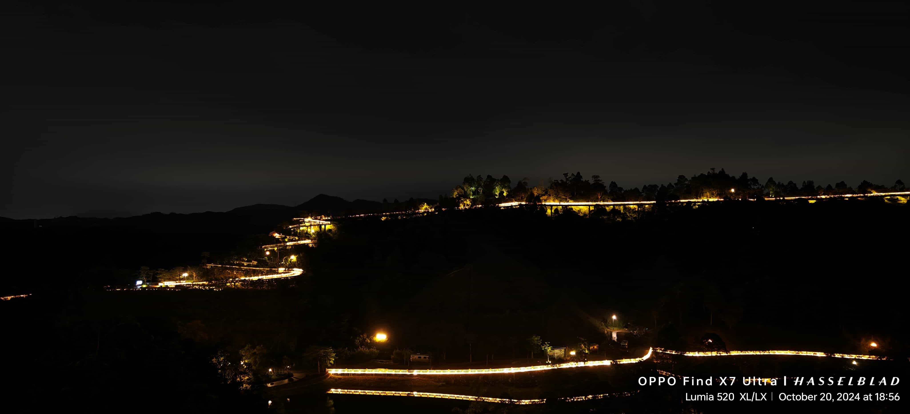

旧地重游追寻美好回忆
概要
To 张瑞连
旧地重游追寻美好回忆 24.03.16, 在一起时未能陪伴你,让你自己一个人去了,抱歉
分开后这次轮到是我一个人晚上过去散步,去追寻曾经走过的路线
最爱姐姐的专属饲养员–弟弟小茗
      
地址: 广东-珠海
本博客所有文章除特别声明外，均采用 CC BY-NC-SA 4.0 许可协议。转载请注明来源 张瑞连！
To 张瑞连
旧地重游追寻美好回忆 24.03.16, 在一起时未能陪伴你,让你自己一个人去了,抱歉
分开后这次轮到是我一个人晚上过去散步,去追寻曾经走过的路线
最爱姐姐的专属饲养员–弟弟小茗
地址: 广东-珠海